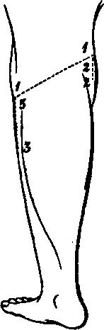

A Dissection To Expose The Popliteus Muscle
Description
This section is from the book "A Manual Of Dissections Of The Human Body", by R. E. Carrington. Also available from Amazon: A manual of dissections of the human body.
A Dissection To Expose The Popliteus Muscle
Position
The leg lying on its anterior surface.
I. Skin Incisions
1. From the middle of the outer surface of the external Condyle of the Femur obliquely downwards and inwards across the back of the joint to the upper margin of the inner Tuberosity of the Tibia at its centre.
2. From the outer end of (1) vertically downwards for one inch.
3. From the inner end of (1) vertically downwards for the upper third of the leg. Reflect the flap downwards, and expose the superficial fascia, containing—
1. Branches of the Internal Saphenous nerve running backwards over the Tibia at its inner part.
2. The Inner branch of the Internal Cutaneous nerve posterior to this.
3. Branches of the Small Sciatic nerve perforating the fascia over the Popliteal space, and the nerve itself coming through just below it.
4. Branches of the External Popliteal nerve supplying the skin at the outer part.
No. 21.
8. The Internal Saphenous vein along the inner border of the Tibia.
9. The External Saphenous vein along the centre of the space, and usually perforating the fascia lata opposite the centre of the articulation, but sometimes running up higher. 10. Lymphatics.
II
Remove the preceding structures including the Internal Saphenous vein. This exposes the fascia lata, strengthened over the Popliteal space by transverse fibres. This must be taken away, and then the following are exposed—
5. On the inner side a cutaneous artery from the Anastomotica Magna.
6. The termination of the Sciatic artery with the Small Sciatic nerve, but here reinforced by a branch from the Popliteal.
7. A cutaneous artery on the outer side from the Popliteal, which accompanies the External Popliteal nerve.
1. Above and externally, the tendon of the Biceps muscle inserted into the head of the Fibula and split by the Long External Lateral ligament.
2. Below, externally and internally, portions of the heads of the Gastrocnemius muscle, the greater part of the inner being visible.
3. A part of the origin of the Plantaris muscle, above the outer head of the Gastrocnemius muscle.
4. On the inner side and below, the tendons of the Semimembranosus and the Semitendinosus muscles, the prolongation of the latter to the fascia lata is divided.
5. Along the median line, the Internal Popliteal nerve giving off branches below, to both heads of the Gastrocnemius, to the Plantaris, Soleus, and Popli-teus muscles, the commencement of the Inferior Internal Articular nerve, and a cutaneous branch running downwards to the integument of the calf, and called the ramus Communicans Tibialis,1 or sometimes the External Saphenous nerve.
6. The External Popliteal nerve following the tendon of the Biceps muscle. A slender branch of this, or of the Great Sciatic nerve, which comes off above the limits of the dissection, may be seen lying on its outer side; it gives off, above, the Superior External Articular, and below, the Inferior External Articular branches, the latter of which passes beneath the onter head of the Gastrocnemius muscle. The External Popliteal nerve gives off the ramus Oom-municans Peronei1 or Fibularis, which perforates the fascia lata considerably above the ramus Communicans Tibialis.
1 For simplicity's sake these branches should be called the Communicans Tibialis and Communicans Fibularis, and the nerve which results from their junction the External Saphenous.
7. The Popliteal vein below and internal to the Internal nerve, receiving the External Saphenous branch, and other veins corresponding to the offsets of the artery to be next enumerated.
8. The Popliteal artery below and internal to the vein, and almost hidden by it and the Internal nerve. Branches running up to the Ham-string muscles and others descending to the calf are seen (Sural), the Superior External Articular artery with the corresponding nerve, the Inferior Internal and External Articular offsets, with the nerves of the same name, and the Azygos branch. There is also a cutaneous branch previously seen accompanying the External Popliteal nerve.
9. Pour or five lymphatic glands or fewer along the Popliteal vessels.
III
a. Hook the Semitendinosus, and Semimembranosus muscles internally.
b. Divide the Gastrocnemius muscle above and below, and remove it within the limits of the skin incisions. Its nerves and arteries will be divided, and there will now be exposed— 1. The Popliteus muscle at the upper part of the Tibia, covered by its special fascia derived from the tendon of the Semimembranosus muscle.
1 For simplicity's sake these branches should be called the Com-municans Tibialis and Communicans Fibularis, and the nerve which results from their junction the External Saphenous.
2. The Soleus muscle below it.
3. The Plantaris muscle crossing it, passing over the vessels and the Internal nerve. The Plantaris should be taken away, inasmuch as it crosses the next-mentioned structures.
4 More of the Internal Popliteal nerve and the branches more fully—viz., to the Soleus muscle, to the Popli-teus muscle. The nerve to this latter muscle is seen turning round the lower border. The Inferior Internal Articular branch running along the upper border of the Popliteus muscle, and beneath the expansion of the Semimembranosus muscle with the corresponding artery.
5. A further portion of the Popliteal artery, and its branches enumerated above, more fully.
6. More of the Popliteal vein.
IV
a. Divide now and remove the Popliteal artery and vein, and the Internal Popliteal nerve.
b. Cut through the Biceps tendon. Open the Capsule of the joint by removing its outer part, and divide the Long and Short External Lateral ligaments.
c. Remove the fascia over the Popliteus muscle, and trace out the tendinous origin of the muscle from the external Condyle. The whole of the Popliteus muscle will be now exposed, and in addition—
1. The ligament of Winslow.
2. More of the Inferior External Articular nerve, and vessels.
Continue to:
- prev: A Dissection To Expose The Gluteus Minimus Muscle
- Table of Contents
- next: A Dissection To Expose The Peroneal Artery And Its Branches